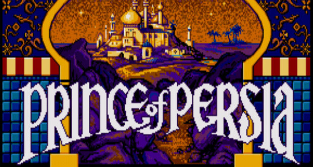
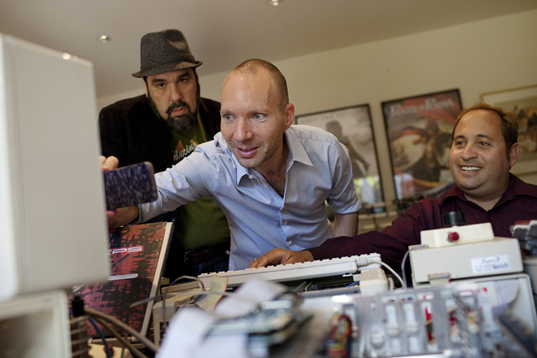
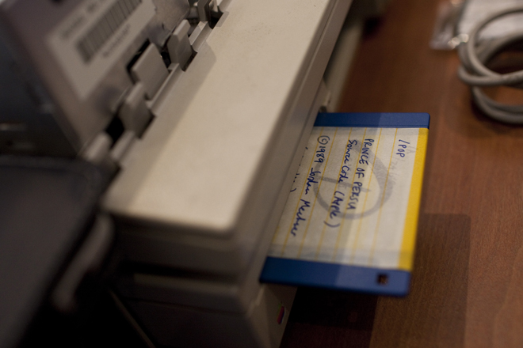

Você consegue imaginar como era programar um jogo em 1989? Naquela época o Apple II era um muito popular entre os desenvolvedores de jogos, e muitos deles programavam sozinhos seus projetos. E foi assim que Jordan Mechner desenvolveu o primeiro Prince of Persia.
Prince of Persia para Apple IIAntes de comentar sobre como o código foi recuperado, eu quero contar sobre o processo de desenvolvimento do Prince of Persia. Jordan se graduou em Yale e começou a desenvolver jogos em algumas empresas. Quando teve a idéia para Prince of Persia, ele também pensou em uma maneira muito criativa de recriar os movimentos do personagem: ele gravou seu irmão pulando e subindo em paredes, e colocou esses movimentos no jogo, isso em 1985!
No vídeo acima o que o irmão de Jordan fez para ajudá-lo a criar o sucesso que seria lançado em 1989 para Apple II. Jordan também lançou um ebook Making of Prince of Persia, onde ele conta muitos outros detalhes sobre o desenvolvimento do primeiro capítulo de uma das franquias mais famosos dos video games.
Jordan Mechner recuperando o código do Prince of PersiaAgora, voltando ao código. Por muitos anos Jordan pensou ter perdido o código de seu grande sucesso, até um dia em que seu pai enviou-lhe uma caixa com algumas coisas antigas, como jogos, disquetes e o código original do Prince of Persia! Nesse momento Jordan publicou um post em seu blog contanto isso, e começou a planejar como iria recuperar o código.
Caixa enviada pelo pai de JordanA revista Wired acompanhou o dia em que especialistas em recuperar dados de disquetes antigos e programadores de Apple II ajudaram Jordan a recuperar o código do jogo, vale muito a pena ler a matéria toda, pois mais coisas foram recuperadas além do Prince of Persia.
Disquete com o código de Prince of PersiaO mais legal de tudo isso é que Jordan liberou o código do jogo no GitHub, inclusive com documentos técnicos para ajudar quem quiser tentar compilar o código. Eu baixei um emulador de Apple II para Windows, mas não faço idéia ainda de como compilar esse código.
Eu acho incrível ver o código de um jogo de tanto sucesso, escrito em uma época com computadores limitados e programadores criativos. Esse código representa um sonho que tornou-se realidade, divertiu muita gente, inspirou pessoas, e agora mostra para todos como era bem complicado fazer um jogo simples, bom e viciante.